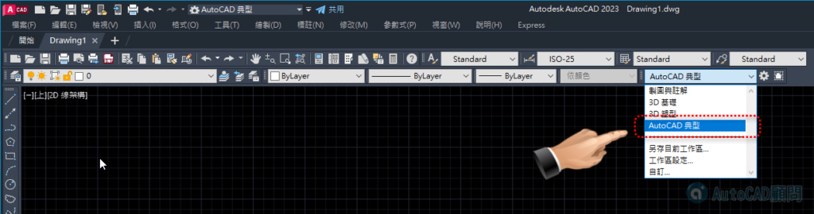

AutoCAD 2027 及未來 AutoCAD 2028 版本一樣沒有「AutoCAD典型工作區」...
現在只要使用我們提供的「SCR腳本檔」，即可快速幫你新增「AutoCAD典型工作區」喔！
*** 此腳本僅適用 Windows版本 AutoCAD ***
快來看看影片吧～
👇新增AutoCAD 2023操作👇
相關文章▼
AutoCAD 2027 及未來 AutoCAD 2028 版本一樣沒有「A…

AutoCAD 2027 及未來 AutoCAD 2028 版本一樣沒有「AutoCAD典型工作區」...
現在只要使用我們提供的「SCR腳本檔」，即可快速幫你新增「AutoCAD典型工作區」喔！
*** 此腳本僅適用 Windows版本 AutoCAD ***
快來看看影片吧～
👇新增AutoCAD 2023操作👇